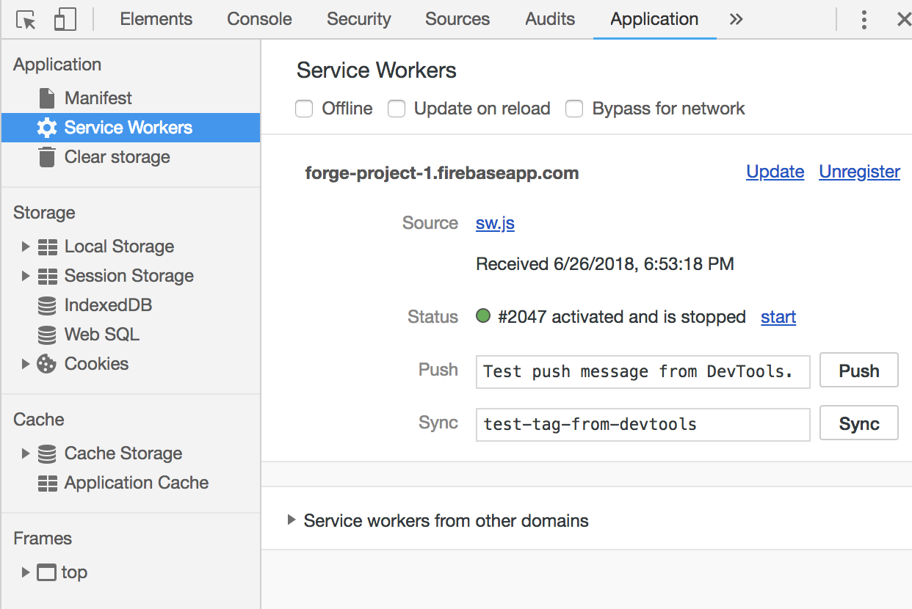

The term Progressive Web Application (PWA) refers to a collection of paradigms and best practices for making a website or web application that functions similarly to a native mobile application.
All Progressive Web Apps are:
Progressive Web Apps need to have the following properties:
Here is a quick guide to get you familiar with what's going on in the browser and codebase we just forged for you.
In Chrome, open the developers tools with Cmd + Option + J (Mac) or Ctrl + Shift + J (Windows).
Navigate to the "Application" tab in the dev tools. On the left hand side, under the Application sub menu, click on "Service Workers".
Click on "Unregister" to remove the service worker that was installed when you loaded this HTML page. Refreshing the page should automatically reinstall the service worker.
If you open up the directory we forged for you, you'll see a "client" folder. In that folder, there is a file named "sw.js". This file is your service worker.
Back in the Application tab of dev tools, you can find a section labeled "Cache". Click on "Cache Storage" and select "beginners-guide" to see the cached files. For now, there is only one HTML file and one CSS file. Your service workers can cache up to 30 MB of files (depending on your browser)!
Just under the "Service Workers" on the Application tab, click the "Clear Storage" option. At the bottom, you can click "Clear site data" to both clear all cached files and unregister your service workers.
Try turning off your WiFi and refreshing the page. Notice that you can still navigate the site. This is because of the service workers in sw.js! If you deployed using AWS, you'll have to configure HTTPS routing and obtain an SSL certificate to enable this feature.
Service Worker Cache InformationIf you'd like to learn more about PWAs, check out these links: